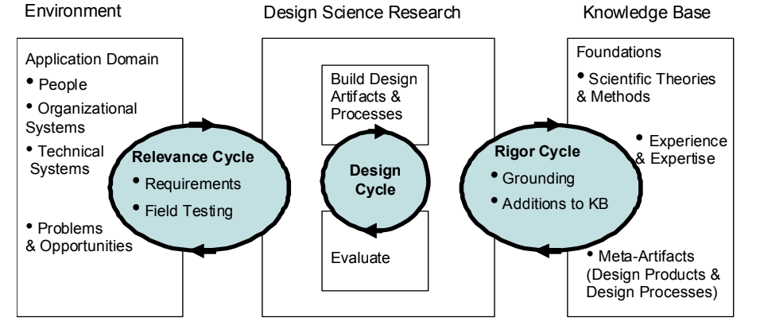
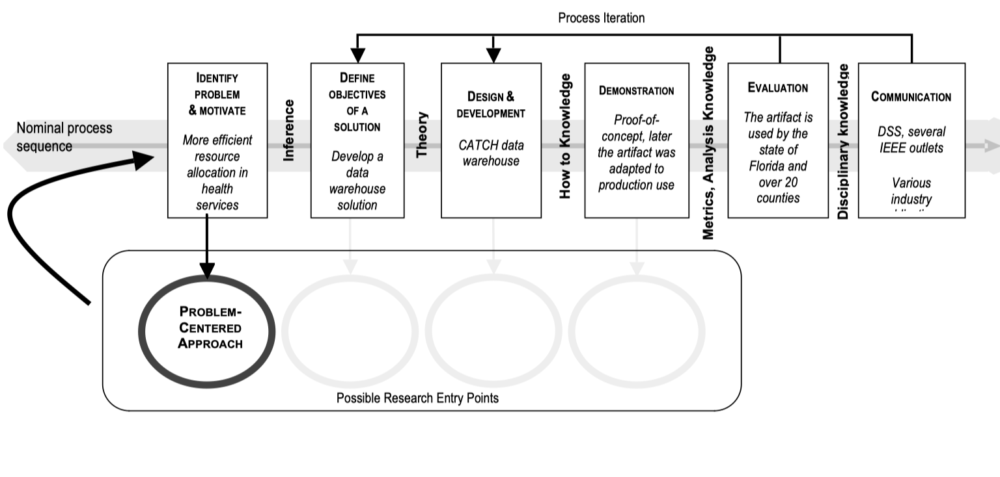

Design Science Research
Design Science Research¶
Sollen im Rahmen der Arbeit mit Hilfe von Technologien (bspw. Python, R, Open Source Software, Microsoft Power BI, …) Lösungen für eine bestimmte Fragestellung erstellt werden, eignet sich die Verwendung der Design Science Research Methode (DSRM), die auch als “gestaltungsorientierte Forschung” bezeichnet wird. Im Kontext der DSRM werden Lösungen auch als “Artefakte” bezeichnet.
Hevner et. al. (2004) zufolge besteht die Zielsetzung der DSRM darin, mithilfe neuartiger Artefakte (d.h. Lösungen) unternehmensrelevanten Problemstellungen zu lösen und gleichzeitig durch deren systematischen Dokumentation den theoretischen Wissenszuwachs zu sichern. Hierfür wurde von den Autoren ein Kreislauf dreier Zyklen mit den Bestandteilen “Rigorosität”, “Relevanz” und “Design” konzipiert (Hevner, 2007):
{kind=link}
Relevanz-Zyklus: Unternehmensumwelt wird mit dem Forschungsvorhaben verzahnt und auf diese Weise sowohl die Problemstellung als auch die Anforderungen an die Artefakte spezifiziert. Ein Artefakt kann dabei eine Technologie, eine Methode, ein Modell ect. darstellen.
Rigor-Zyklus: Erstellung des Artefakts unter Berücksichtigung bereits bestehender Wissensbasis (Literaturrecherche, Best Practice Ansätze).
Design-Zyklus: Erstellung der Artefakte (Modelle, Methoden, … ) unter Einbeziehung der in den beiden anderen Zyklen gewonnenen Erkenntnisse.
Peffers et al. (2007) überführten die drei Zyklen in einen Prozess, der als Grundlage für die Gliederung der eigenen Arbeit genutzt werden kann. Hier ein Beispiel, in welchem ein Data Warehouse entwickelt werden soll:
{kind=link}
Die Vorgehensweise folgt typischerweise diesem Schema:
Beschreibung der Problemstellung und Motivation
Recherche und Aufarbeitung der relevanten Literatur (Theorien, Best Practice Ansätze, State of the Art Ansätze)
Definition der Zielsetzung und Erstellung eines Anforderungskatalogs (was ist der gewünschte Funktionsumfang der Artefakte?)
Design und Entwicklung der Artefakte
Demonstration und Evaluation der Artefakte
Kommunikation (optional)